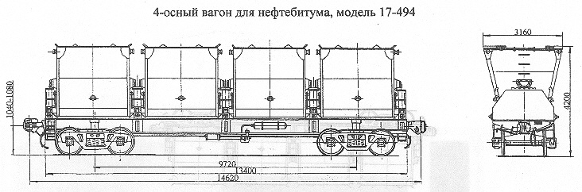

Назначение: для перевозки нефтебитума
Параметры
| Номер проекта | 494.00.000 |
| Технические условия | ТУ 24.05.426-84 |
| Модель вагона | 17-494 |
| Тип вагона | 702 |
| Изготовитель | ДВЗ им. газеты "Правда" |
| Грузоподъемность, т | 45 |
| Масса тары вагона, т | 36,5 |
| Нагрузка: статическая осевая, кН(тс) |
199,62(20,37) |
| погонная, кН/м(тс/м) | 54,586(5,57) |
| Скорость конструкционная, км/ч | 120 |
| Габарит | 1-ВМ(0-Т) |
| База вагона, мм | 9720 |
| Длина, мм: по осям сцепления автосцепок |
14620 |
| по концевым балкам рамы | 13400 |
| Высота от уровня верха головок рельсов максимальная, мм | 4200 |
| Количество осей, шт. | 4 |
| Модель 2-осной тележки | 18-100 |
| Наличие переходной площадки | нет |
| Наличие стояночного тормоза | |
| Объем, м3: полный |
53,48 |
| полезный | 46,4 |
| Объем одного бункера, м3: полный |
13,37 |
| полезный | 11,6 |
| Количество бункеров, шт. | 4 |
| Размеры бункеров, мм: длина |
2515 |
| ширина по верху | 2706 |
| высота | 2615 |
| Угол наклона боковой стенки бункера к горизонту при разгрузке, град | 85 |
| Год постановки на серийное производство | 1978 |
| Возможность установки буфера | нет |